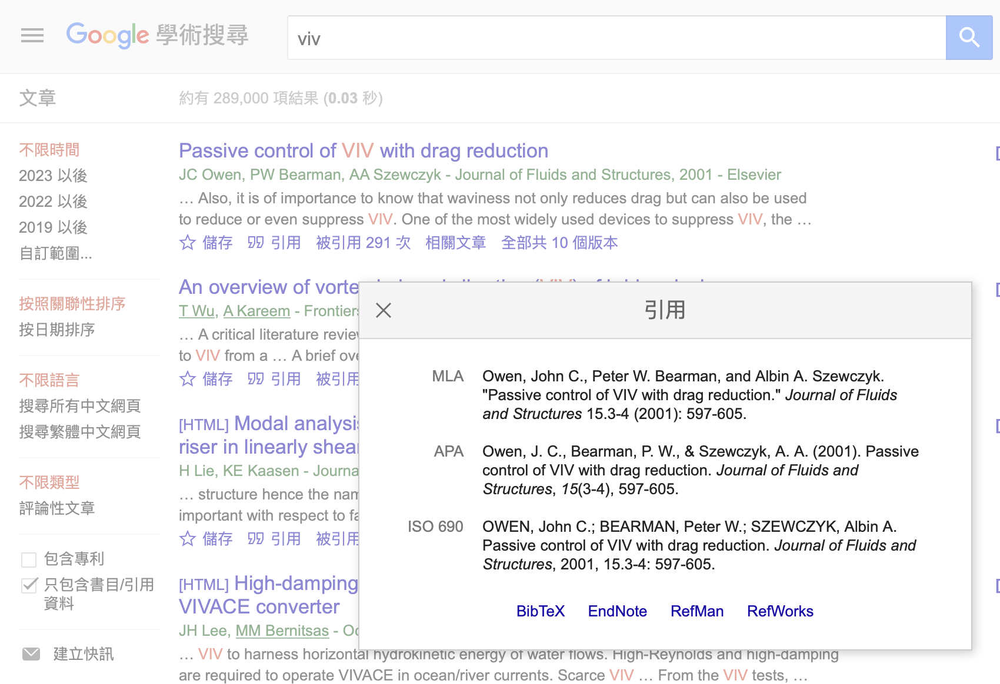

如何做文獻回顧
Table of Contents
2. 文獻引用與格式
2.1. 引用規則
2.1.1. 內容註 (Content notes)
文中如有引用某篇文獻的內容，須依「文中引用格式」列出文獻資訊。
2.1.2. 資料註 (Reference notes)
文中有引用的文獻，則須在報告末之「參考文獻」一節列出此文獻詳細資訊。
2.1.3. 內容註與資料註必須一致
文中有引用，才需要列於「參考文獻」之中。反之，文中未引用，則不得列在「參考文獻」中。
2.2. 「參考文獻」之格式
可使用 Google 學術搜尋之「引用」，自動產生正確的格式。一般選擇 APA 格式即可。

Figure 1: Google 學術搜尋之「引用」功能。
3. 參考資料
- 文獻回顧與引用 (書報討論教材): 見連結。
- 台灣大學圖書館: 期末報告大作戰！ https://www.lib.ntu.edu.tw/img/tulblog/HELP/HELP_20180510_finalreport.pdf